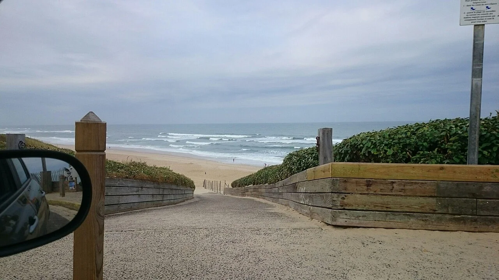

Biscarrosse-Plage
Landes, France · surf

Une grande plage landaise, entre les dunes et l’Atlantique. Une étape pour prolonger un voyage sur la côte aquitaine.
- Lieu
- Landes, France
- Niveau
- Variable selon les conditions
- Activités
- surf
- Type d'eau
- Mer / océan
- Coordonnées
- 44.45, -1.25 (position approximative du secteur)
Ouvrir dans Ocean Buddy Télécharger sur l'App Store
Source : France.fr.